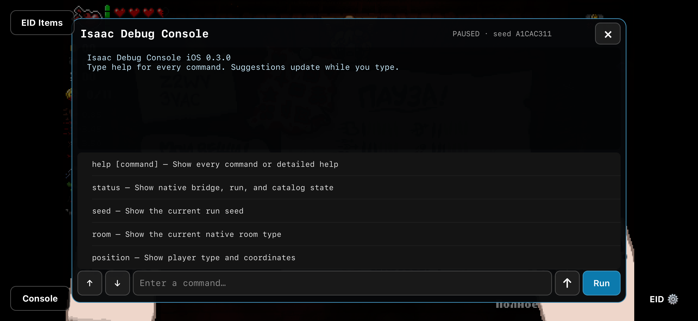

RootlessDEB
Jailbroken devices
ElleKit package filtered to Isaac’s bundle identifier. Install, then restart the game.
DownloadA native in-game debug console for The Binding of Isaac on iOS. Search the item catalog, inspect your run, spawn pickups, change inventory, and use Isaac’s own rewind effect through a touch-friendly interface.
Get the latest release for your setup. Download buttons follow the newest GitHub release as updates are published.
Latest release available on GitHub
ElleKit package filtered to Isaac’s bundle identifier. Install, then restart the game.
DownloadImport the framework into an app-specific tweak folder assigned to Isaac.
DownloadDylib package for direct embedding into your own modified and re-signed app.
DownloadAll public formats, documentation, and checksums for advanced installation.
DownloadThe core uses Apple system frameworks. ElleKit is required only for the optional jailbreak loader. All release files and notes.
Touch input, live suggestions, and command output inside Isaac.

Pause an active run to open the console. Its UIKit overlay sits in Isaac’s existing window, while touches outside it continue to reach the game.
Tap command and catalog suggestions to complete input. Execute with Run or the keyboard’s Return key.
Read the current seed, room type, player position, inventory, executable status, and native bridge status.
Find collectibles, trinkets, cards, runes, Soul Stones, and pill effects by name or ID, using the installed game’s catalogs.
Give or remove collectibles, spawn item pedestals and pickups, or create supported native entities beside the player.
Use rewind to trigger Isaac’s real Glowing Hourglass effect. Session history and scrollable output keep commands easy to revisit.
Modifying commands require a paused active run and validated game functions. Unsupported executables leave those commands disabled.
helpstatusseedroominventoryspawnitem sacred heartspawnrune jeraspawnpill 7 horserewindThe Console button appears in the lower-left corner during a paused active run. It hides during gameplay and outside a run.
Choose the rootless DEB, LiveContainer private-app framework, or embedded package. Restart Isaac after installation.
Pause a run, tap Console, and run status. Use help to list commands or help spawnitem for detailed usage.
Try items sacred heart, inventory, or seed. Use autocomplete and session history to keep typing to a minimum.
Debug commands change the current run and may affect saved progress. Back up application data before experimenting.
ARM64 App Store version 1.4, Repentance v1.7.9b.J754, bundle identifier com.Nicalis.Isaac-iOS.
The core supports rootless injection, LiveContainer private apps, and direct app-bundle embedding.
Native modifications run only after executable, player, function, and game-state checks pass.
Glowing Hourglass follows the game’s own rewind path. It cannot undo arbitrary console changes.
An unofficial project, unaffiliated with REPENTOGON, Nicalis, Apple, or Valve. No game application, DLC, or purchase bypass is included.